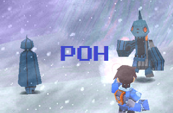

HP:
Blue: 198 (B), 230 (A), 245 (S)
Brown: 240 (B), 250 (A), 255 (S)

Overview
Poh only makes a couple of appearances throughout the duration of Megaman Legends 2, but he certainly isn't one to be forgotten.
He initially appears on Forbidden Island, looking somewhat humanoid (sans the lack of arms), as Roll even wonders if it's a person.
In this state it simply walks slowly, minding its own business. Should you shoot it however, Poh transforms into something a bit more
monster-ish, chasing you until either you kill it or leave the area.
The variation that lurks in the fiery ruins of Saul Kada acts a bit different. While the fist variation attacks you if you hurt it,
these are a little more protective in that if you shoot one of them, they all run after you. There's a room full of them that you can't
leave until they all are destroyed, and they're quite persistent as well. These guys do drop a decent amount of zenny if destroyed, too.
Dealing With It
Really, the best advice I could give for defeating them is "don't stick your hand in the fire if you don't want to get burned". After
their first appearance, it's very obvious that they're going to transform if you shoot them, so if you're not looking for a fight just
ignore them. Otherwise, the best way to deal with them is to stay at a distance and fire. While they love to chase you, they honestly aren't
too quick, so you shouldn't have too many problems.
Coming In for a Landing
The concept for Poh wasn't bad, but the execution leaves something to be desired. The eerie feeling of wondering just what kind of
reaverbot you were looking at (even wondering if it was one at all) on Forbidden island was pretty cool in hindsight, as was the initial
shock of it transforming into a monster after shooting at it. The whole limited visibility in the snow really complimented the effect of
mystery on top of that.
Unfortunately, that's where it ends. Once you know about the gimmick, the reaverbot kinda loses its personality, so to speak, and it
goes from being creepy to annoyingly cheesy. Sticking you in a locked room full of them was pretty much beating a dead horse. The reaverbot
design feels a bit too gimmicky to be liked in the long run, as it's a one-shot deal. Poh gets a 4/10 from me.